Home clássica · antes de entrar
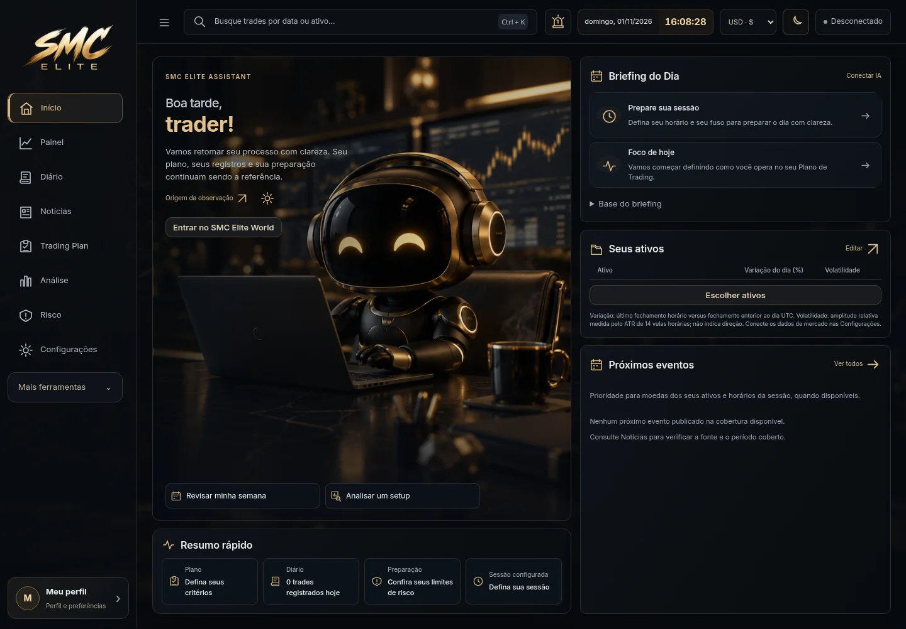
Aplicativo executado em Chromium, com dados sintéticos de testes. Não são mockups, contas de produção ou números padrão do produto. Clique em cada captura para ver o tamanho completo.
Arquitetura, uso, testes e limitações

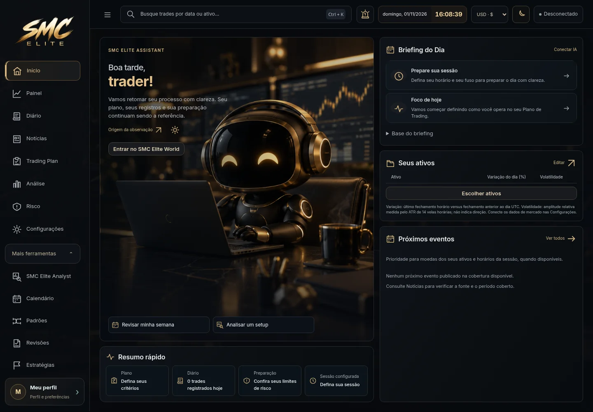
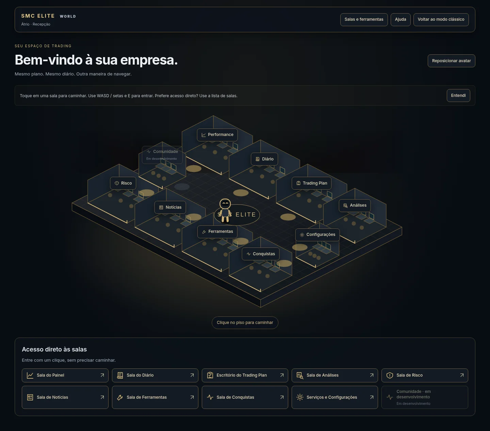
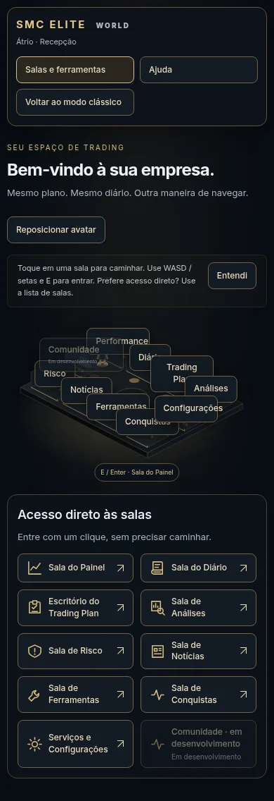
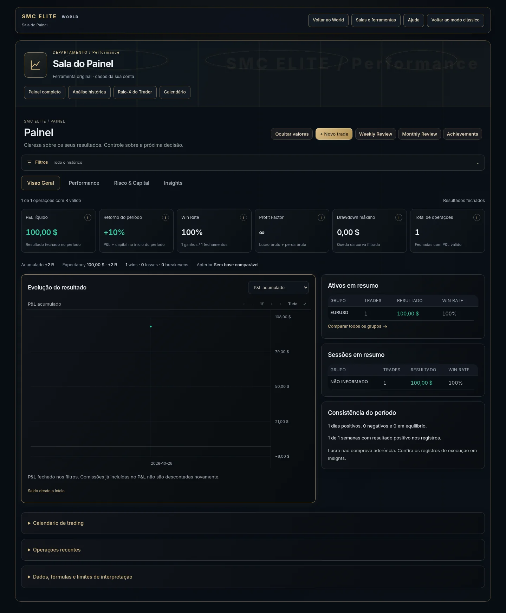
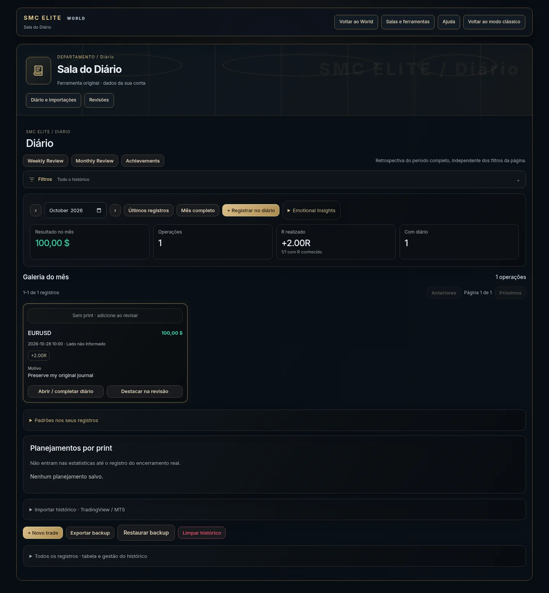
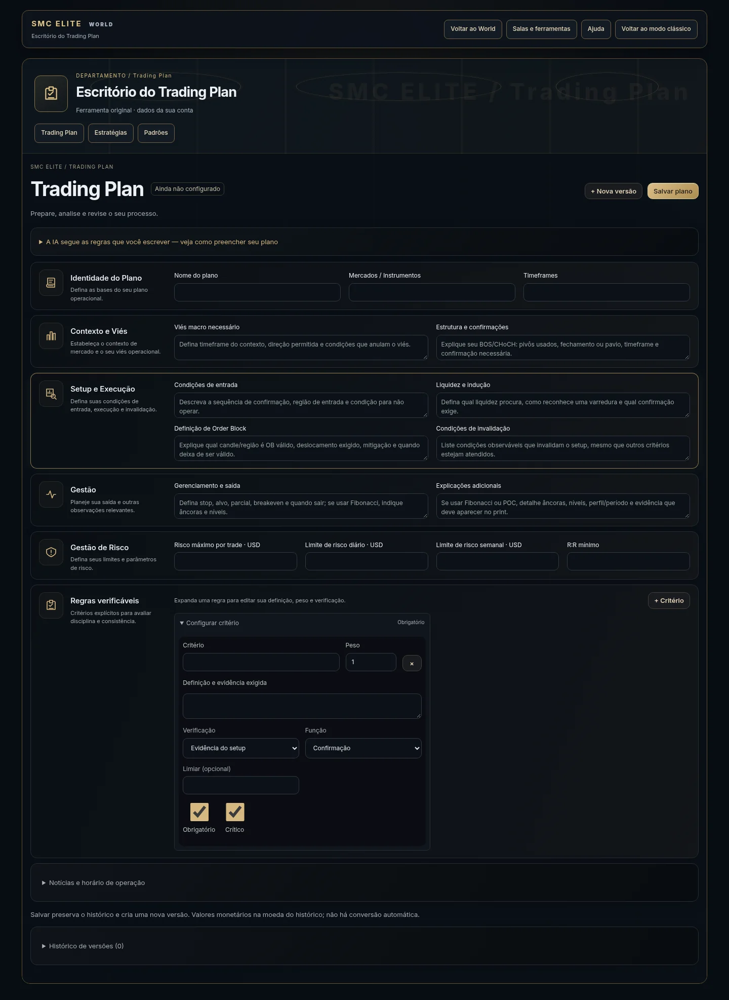
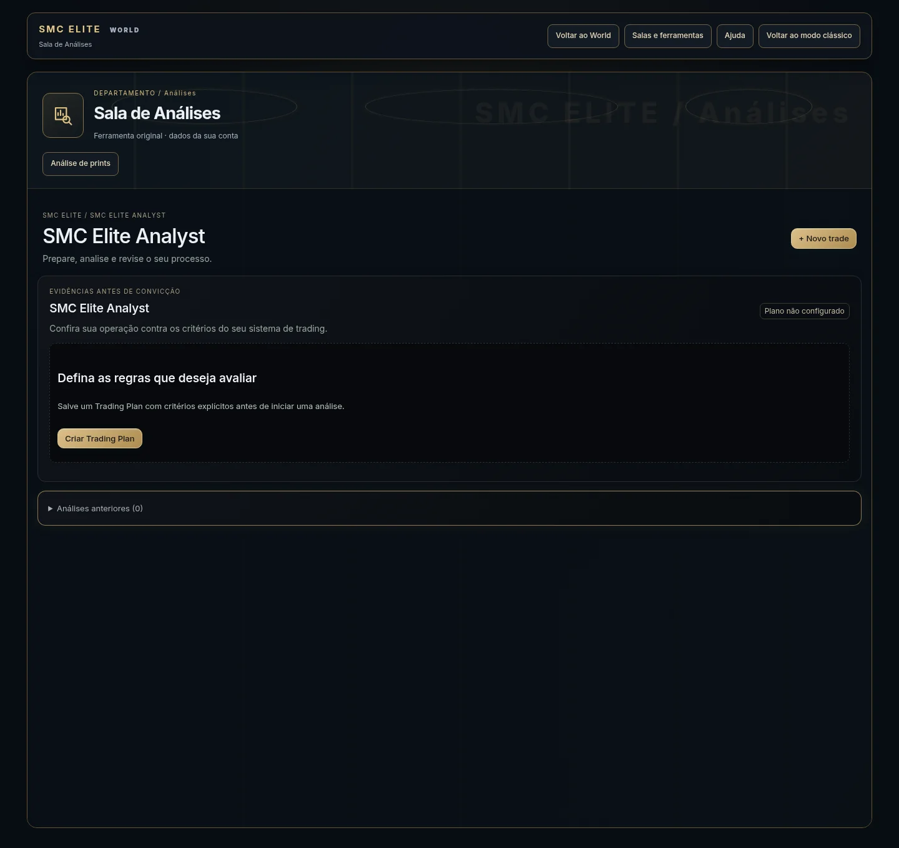
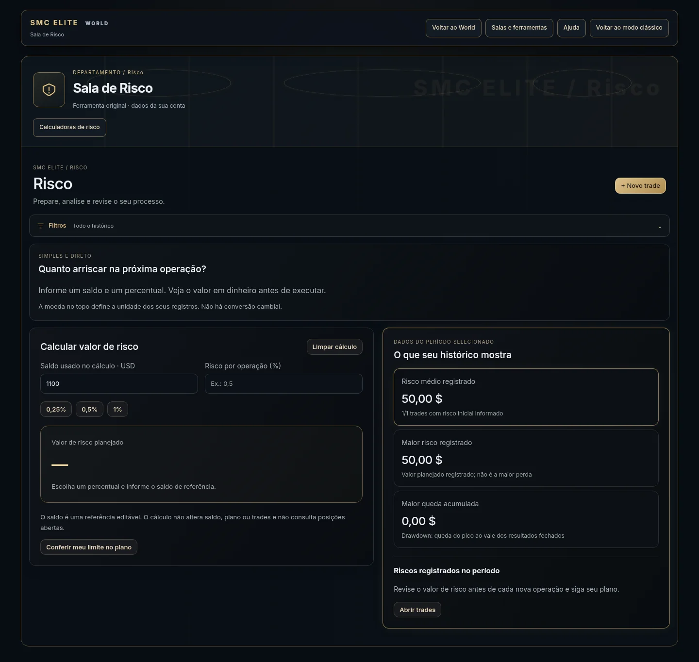
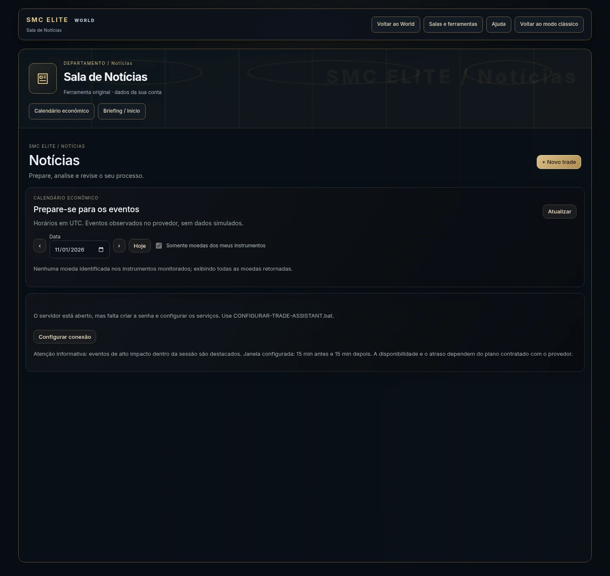
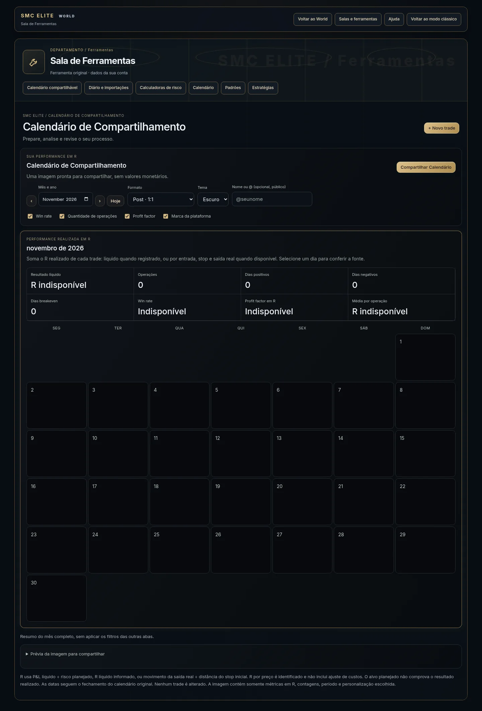
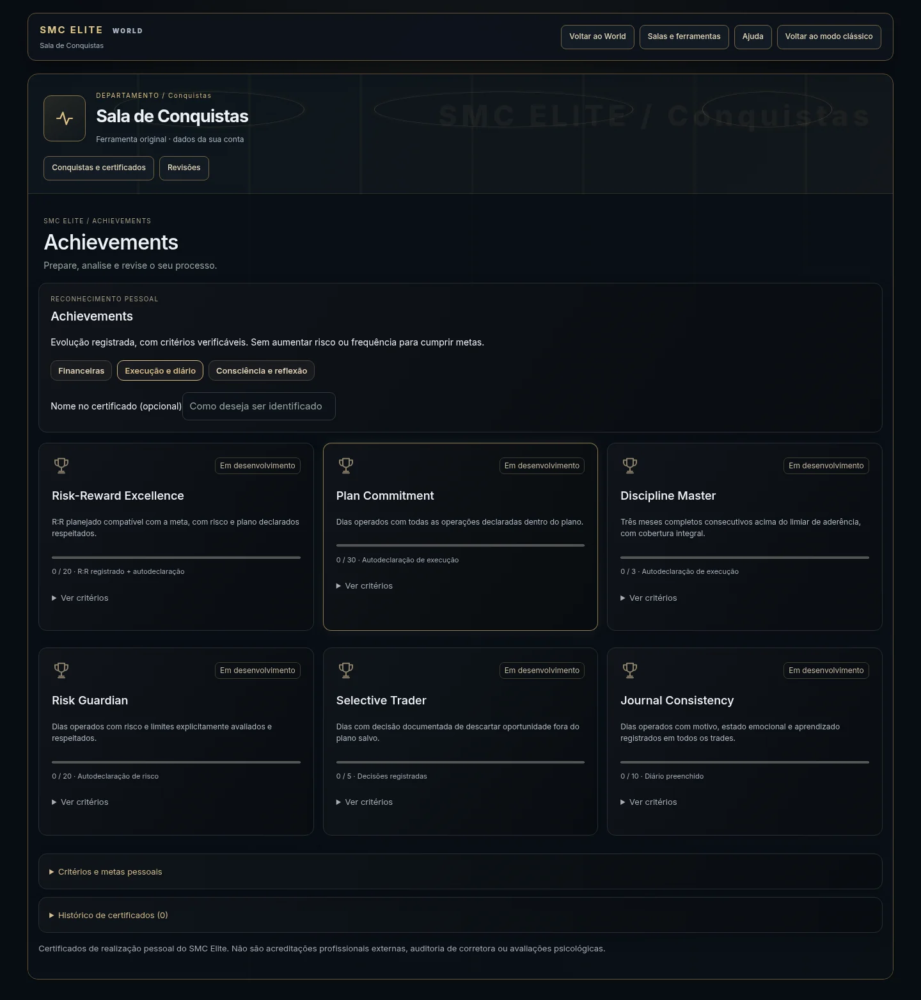
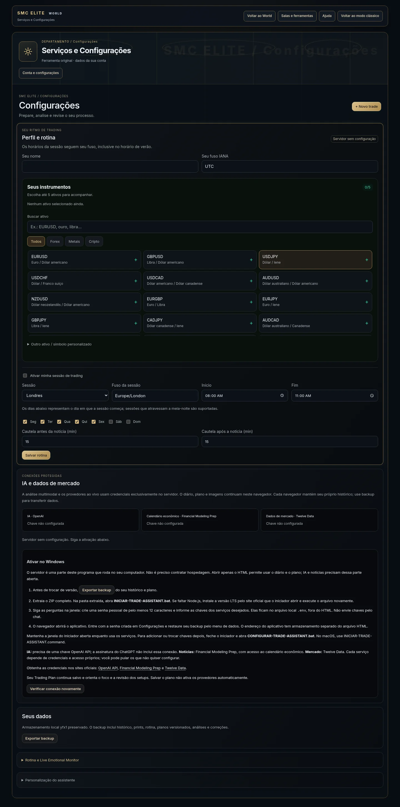